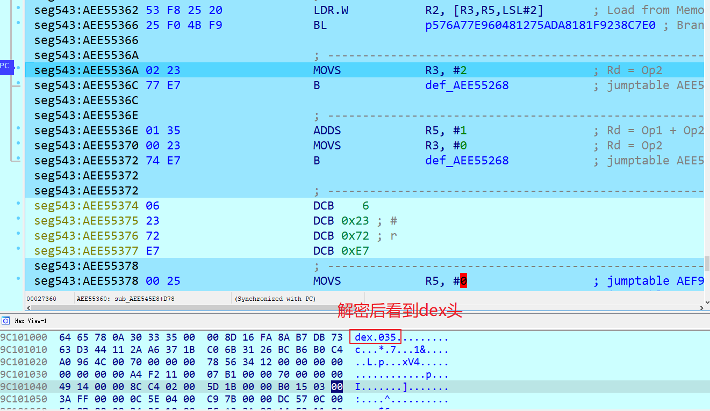

bangbang加固企业版分析（上）
阅读了看雪上一篇对 android VMP 壳的反混淆思路文章:
对于壳的功能作者并没有进行详细的阐述，看后感觉意犹未尽，而且这家厂商的壳分析文章在网上挺多的，以前简单分析过它的免费版，这次正好拿来作为 VMP 壳入门。因为内容过多，需要分为上下两篇。
分析环境
设备：Nexus 5
系统：Android 6
架构：armeabi-v7a
java层入口
先看有没有实现 application
实现了 application 就去看看它的 attachBaseContext ，加载了 libDexHelper.so
那么接下来就是分析 libDexHelper.so
init函数
从初始化函数开始分析，F5 失败，0xD0688 的地方分析失败

0xD0688 处调用了一个函数，进去后 F5 看到参数个数有点多，可能是函数参数声明不正确
结合上层函数的传参情况，对该函数的参数声明修改成如下形式
1 | void __fastcall sub_D0C30(_DWORD *a1, int a2, int a3) |
然后对 sub_D0C30 这个函数 F5 会出现如下错误，这是因为函数中存在破坏堆栈的指令
解决办法参考下面这篇文章：
ida 中打开 Options -> General -> Stack pointer ，这样方便查看堆栈情况，根据函数首尾入栈与出栈找到破坏堆栈的一句指令，把它 nop 掉即可
回到 init 函数，现在可以 F5 了，两个函数的主要内容都在注释中写出
1 | void init_proc() |
进入 sub_D0C30 ，在该函数结尾的两个 mprotect 下断点，运行到断点处就能 dump 出解密后内存数据，第一个 mprotect 是修改代码段的权限，第二个 mprotect 是修改数据段的权限（包括 GOT 表），所以能够 dump 出解密后的代码段和数据段。
1 | void __fastcall sub_D0C30(_DWORD *a1, int a2, int a3) |
后面还有一个 init 函数，自己调试了一下，逻辑就是判断当前进程是不是 dex2oat ，不太重要就不细说了
JNI_OnLoad函数
OLLVM混淆
JNI_Onload 做了平坦化混淆，网上有很多应对 OLLVM 的方法，我一般就直接在 ida 中 trace 出指令日志，然后分析日志
上一篇文章用 ida 提供的 trace 功能，出现跑飞的情况，而且我不想跟进函数调用，所以参考这位大佬的 trace 脚本自己改了一份：
trace 脚本跟踪 JNI_Onload 的所有指令，效果如下：
1 | ( libDexHelper.so[0xAEF38000])[2D E9 F0 4F ]0x00028868: PUSH.W {R4-R11,LR} |
接下来如果函数比较简单就分析日志找到关键的块下断点，复杂的话就用脚本从执行过的块中尽可能过滤掉虚假块，对剩下的真实块逐个分析，基本能把逻辑分析出来。具体就不展开了，绕过 OLLVM 不是本篇的内容。
像下面这样把真实块打印出来，index 表示执行的顺序，ea 表示块的偏移地址，接下来就是对这些块进行漫长分析.
1 | -----relevant-block------ |
注册java方法
0x2A024 处调用 RegisterNatives 注册 com/secneo/apkwrapper/H 的所有 native 方法，整理出 java 方法对应的 native 函数
1 | "attach": sub_2775C |
加载原dex
0x2A030 处调用 sub_265E8 函数，在这里面完成 dex 的加载，同样是做了混淆
解密dex内存数据
在 0x2721C 处调用 sub_49604 ，该函数内部通过反射类
java/lang/Class获取dexCache对象，再反射获取java/lang/DexCache的dexFile对象，再调用GetIntField将其转成在 native 层中的指针，在 android 6 上，该指针加 4 字节处指向当前壳 dex 在内存中的位置，最后通过匹配特征找到 dex 中的 injected_data 。在 0x27366 处调了一个函数，观察第二个参数指向 injected_data 的某个位置，当函数跑完后该位置加密数据变成 dex ，说明调用解密函数解密 dex ，这里可以 dump 出 dex 。
来到 0x26E6A ，调用 access 函数查看 v1filter.jar 是否存在于 .cache 目录，若不存在则在 0x26D26 处解密并释放 v1filter.jar 到 .cache ，解密数据来自于 apk 包 assets 目录下的 resthird.data
加载dex
0x273C6 处调用 sub_3FA6D ，这个函数在 0x44A52 处 hook 了
art::DexFileVerifier::verify函数，hook 后 verify 函数开头指令如下图所示：
可以看到明显的 hook 特征，使用 LDR 指令跳转到函数 sub_AEF31EBC ，开头的 BX 指令的意义可能是为了保证 ldr 指令是 4 字节，这样可以固定使用LDR PC,[PC - 4]指令来取地址，不知道是否正确。
sub_AEF31EBC 给 R0 赋值为 1 就返回了，也就是恒定返回 true
回到 sub_3FA6D ，在 0x426BA 处 hookart::ClassLinker::OpenDexFilesFromOat，hook 原理一样，fake 函数是 sub_433E8 ，这个函数留到下面再讲。
sub_3FA6D 最后调用 dlsym 获取art::DexFile::OpenMemory地址然后作为返回值返回，后面要用到这个函数加载 dex0x26756 处调用 sub_1A7C4 ，这个函数的逻辑是对每一个 classes.dex ，在 .cache 下创建文件，写 4 字节的 dex magic 到文件中，这个 app 一共 10 个 dex 。
然后在 0x1AE44 处调用com/secneo/apkwrapper/H的 native 方法f，经过分析，该方法调用makeDexElements加载 dex 并且替换原classloader的dexPathList中的dexElements。
调用 makeDexElements 所传入的 dex 路径是就是 10 个 dex 所在的 .cache 目录，而 dex 只有 4 字节，直接加载肯定是失败的，那么前面 hookOpenDexFilesFromOat的 fake 函数 sub_433E8 在这里起到作用，其逻辑如下：在 0x4345A 判断加载的是否是 v1Filter.jar ，若是就在 0x435EE 处调用原
OpenDexFilesFromOat做文件加载，v1Filter.jar 里面就是个工具类 dex
在 0x4350C 处判断是否加载 classes.dex ，若是就在 0x4352E 处找到相应的 dex 数据，然后在 0x43568 处调用
OpenMemory完成内存加载
接下来，在 OpenMemory 处下断点即可 dump 出所有 dex ，为了方便分析，可以使用这个工具把 dex 合并为 apk ：dex2apk
此外，分析过程中没有发现对 dex 做指令还原，后来我又确认了一下，在 dex 加载过后查看 DefineClass 、LoadMethod 和 LinkMethod 等函数开头有没有 hook 指令特征，然而一直到 jni_onload 跑完都没看到变化。去年分析的免费版也不是抽取壳，也是在 OpenMemory 处 dump 出 dex 。
框架检测和反调试
magisk检测
0x2AB2C 处查看当前进程名是否是 :bbs:com.secneo.apkwrapper.r.S ，这个可能是检测 magisk 的 android 服务，不过我没在手机上找到这个服务，不知道具体如何检测。
1 | int __fastcall is_magisk_check_process(int a1) |
回到 JNI_Onload ，0x2A142 处的 BLX R5 指令跳转到 sub_5f5c8 ，这个函数是实现反调试以及 frida 检测逻辑的地方。
frida检测
在 0x5fd12 处调用 sub_5A088 做 frida 检测
- 从
/proc/self/task/<tid>/status的 name 字段读出的字符串是不是"gum-js-loop" - 从
/proc/self/task/<tid>/status中读出的字符串是不是"gmain" - 调用
readlink读取/proc/self/fd/<fd-id>，匹配 readlink 读出的内容是不是"linjector"
1 | int __fastcall sub_5A088(int a1) |
反调试
在 0x5fd00 和 0x5fd06 处调用 pipe 函数，创建两个管道用于父子进程通信
0x5f8ee 处 fork 进程，父进程逻辑如下：
- 0x5fb50 处 hook
ptrace，hook 后的 fake 函数是 sub_5B044 ，该函数通过 svc 调用kill掉进程 - 0x5fb5c 处开线程，线程函数 sub_59970 调用
inotify_add_watch函数监控文件/proc/self/mem - 0x5fb56 处开线程，线程函数 sub_60ce0 调用
fopen打开/proc/self/status，fgets读取文件内容找到 “State:” ，然后读取值，再调用strcasestr匹配子字符串"T (stopped)"、"(zombie)"以及"t (tracing stop)"，匹配到了程序会退出。接着打开/proc/self/task/<tid>/status，同样是读取 “State:” 的值以及匹配那几个子字符串。如果都没有匹配到就调用 sleep 睡眠然后重复上面的内容。同时我发现如果是单步过去的话 “State:” 的值会是 “sleeping” ，反调试就检测不到，而 F9 过去就会被检测到 - 最后往可写 pipe 写入 0xFF ，再从可读 pipe 读取一字节，这个字节如果不是 0xFF ，就做 svc 调用 kill 掉自己
除了不 hook ptrace，子进程逻辑跟父进程一样，而且它也会用管道跟父进程通信，在读出的字节不是 0xFF 会 kill 掉自身。
其它
JNI_Onload 跑完后，回 java 层看到 com/secneo/apkwrapper/AW 的 attachBaseContext 调用 com/secneo/apkwrapper/H 类的 attach 方法，前面说过这个方法被 RegisterNatives 注册到 sub_2775C ，到这里一般是做资源替换和 application 替换，就不详细分析了。
结束
感觉现在大多数壳都是用 makeDexElements 加载磁盘上 dex 然后在 java 层做 dexElements 合并，磁盘上的 dex 不是掏空就是加密，然后在加载 dex 的调用链上找个函数 hook 完成解密，比如 OpenCommon ，恢复抽取的方法指令就 hook loadMethod 。
对于这个壳的反 frida ，亲测使用 hluda 的 spawn 模式可以过掉。然后因为有 ptrace 反调试，用 frida 或者调试器 attach 上去会崩，其它反调试可以编译修改内核绕过。
bb 壳除了上面分析的加固技术，还有防篡改技术，需要看看这篇文章：[原创]梆梆企业版加固技术之防篡改剖析